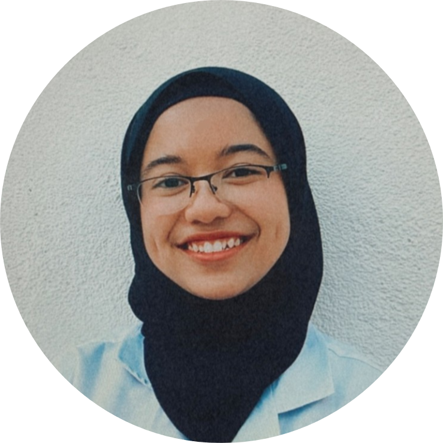

Nurul Iman binti Mohd Daud
Subang Jaya, Selangor | LinkedIn | GitHub | +6013-7793237 | nurul.iman6@gmail.com
Skills: Microsoft Office | Google Docs Editors | C++ | Python | JavaScript | SQL | HTML/CSS
Interests: Computer Programming, Volunteering, Reading, Editing Photos
EDUCATION
MySTEP TalentLabs Programme
Foundation Certificate in Software Engineering Graduation Date: July 2022
International Islamic University Malaysia
Bachelor of Engineering (Biochemical-Biotechnology) (Honours) Graduation Date: July 2022
Centre of Foundation Studies, IIUM
Foundation in Engineering and Information Communications Technology Graduation Date: July 2022
Sekolah Menengah Kebangsaan USJ 4
Pure Science Stream Graduation Date: December 2015
LEADERSHIP EXPERIENCE
Biochemical-Biotechnology Engineering Students' Association (BESTA)
Co-Chairperson November 2019 - November 2020
- Supervised and counselled junior team members regarding team management and document writing.
Ensured smooth management of the club throughout 12 months of the tenure.
- Planned an orientation program alongside 20+ team members through meetings, discussions
and visualisations. Ensured smooth arrangement a month prior to the program.
Welfare Enginius XXV
General Secretary I November 2018 - November 2019
- Mentored team members on database management and documentation using Microsoft Office,
Google Docs Editors and Google Drive. Standardised the data storing throughout 12 months.
- Regulated a charity service program alongside 10+ team members to assist financially needy
students by providing 100+ free lunch packs monthly. Assured food security among students in the faculty.
WORK EXPERIENCE
International Institute For Halal Research And Training (INHART)
Research Assistant August 2020 - October 2020
- 8-week internship experience assisting a Masters student on a project titled “Zebrafish Nutrition:
Promoting Fish Health and Welfare of the Animal Model in Halal Science Research”.
- Investigated on aquatic animals through reading and online searching.
Generated a report on the definition, history and scholarly views of Al-Jallalah aquatic animals.
Happy Bunch
Junior Florist June 2019 - August 2019
- Produced bouquets alongside 20+ other workers by prepping, arranging and wrapping flowers.
Ensured production of 100+ bouquets every day.
- Guided junior florists on database management, documentation and item organisation using
logbooks and Google Forms. Eased inventory tracking every day.
PROJECTS
JavaScript Project
Tic-Tac-Toe Project May 2022
- Constructed a tic-tac-toe game with JavaScript by using objects, arrays, functions,
if-else statements, for and while loops. Successfully produced a two-player tic-tac-toe game that
prompts users to key in moves.
SQL Project
Exploring Titanic Database June 2022
- Explored and analysed the Titanic database using SQL. Generated a report on the survival rates
of different sorts of people onboard the Titanic.